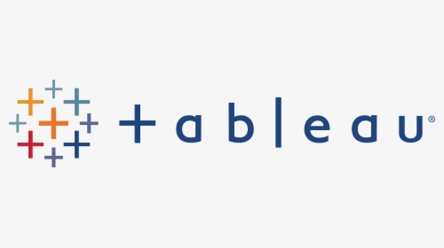
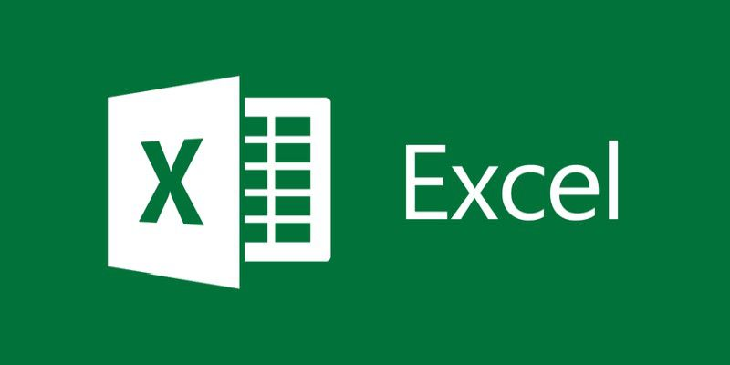

A comprehensive list showcasing Projects reflecting experience in Microsoft Excel, MySQL, Python, RStudio, Tableau.
Along with this, Case Studies and Thesis done during studies are also detailed.
Covid 19 Data Exploration in SQL
Exploring Global Covid 19 data using SQL Server
Tableau Projects

Tableau Dashboards for projects on Gloabl Covid 19 dataset,KPI for HR Analytics dataset.
Excel Projects

Microsoft Excel projects showing Data Cleaning, Pivot Tables and Dashboards on Bike Purchase dataset,etc.
Data Cleaning in SQL

Raw Housing data transformed in SQL server for further analysis.
University Project
Optimization of Lot Sizing Problem for Injection Molding Machines at Bayerische Motoren Werke GmbH (BMW).
Case Studies
Different Case Studies on Forecasting and Supervised Learing for Prediction achieved through RStudio, Knime and Microsoft Suite.
Bachelor Thesis

Implementation of E-Kanban to bridge the gap of information flow at the manufacturing plant of Cimtrix Systems (P) Ltd.
Master Thesis
Electric Vehicle Purchasing Behaviour in Beijing, China.